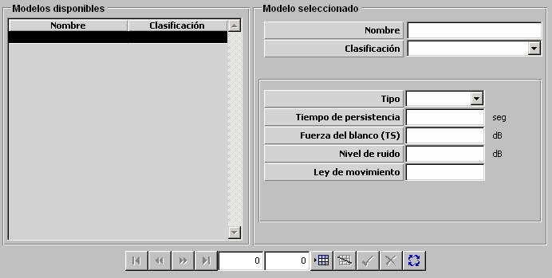

Señuelo

Descripción de los parámetros:
Tipo: Puede tomar los siguientes valores:
Ese parámetro determina el comportamiento del señuelo una vez lanzado al agua. Los señuelos de tipo BURBUJA, ascienden hasta la superficie y los de tipo FOSFURO, permanecen en la profundidad a la que son lanzados.
Tiempo de Persistencia: Este parámetro determina el tiempo que permanece el señuelo en el agua desde que es lanzado, siempre que no llegue hasta la superficie, si es de tipo Burbuja.
Unidades: segundos
Rango: 0 – 999
Fuerza del Blanco (TS): Este parámetro determina el nivel de ruido en banda ancha que produce el señuelo mientras permanece en el agua. Es tenido en cuenta para modelar cómo afecta el señuelo a los sonares activos.
Unidades: dB
Rango: 0 – 999
Nivel de Ruido: Este parámetro determina el nivel de ruido en banda ancha que produce el señuelo mientras permanece en el agua. Es tenido en cuenta para modelar cómo afecta la burbuja a los sonares activos o pasivos.
Unidades: dB
Rango: 0 – 999